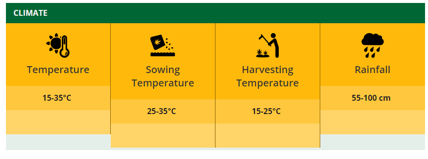

About Cotton
Cotton is one of the most important fibre and cash crop of India as well as of entire world. It plays a dominant role in the industrial and agricultural economy of the country. It provides the basic raw material to cotton textile industry. In India it provides direct livelihood to 6 million farmers and about 40-50 million people are employed in cotton trade and its processing. Cotton is a water thirsty crop and around 6% of the water for irrigation in is used for its cultivation. In India, it is grown on a large scale in Maharashtra, Gujarat, Karnataka, Madhya Pradesh, Punjab, Rajasthan, Haryana, Tamil Nadu and Uttar Pradesh. Gujarat is the largest producer of cotton followed by Maharashtra and Punjab. It is vital kharif crop of Punjab. The average lint yield of the State is around 697 kg per hectare.
